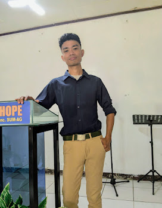

SYSTEM DIAGNOSTIC ONLINE
I am Cristian T. Embelino, a Bacolod City native fueled by a 2026 vision. My life is built on a Biblical worldview and the discipline of a licensed Career Service Professional. Whether I am troubleshooting complex networks at Outdoormaster Inc. or studying theology at Maranatha, my goal is the same: excellence that honors God.
Exploring the beauty of Negros on my Honda RS 125. Adventure is the best reset.
Guitarist and Tenor. There is a deep theology found in the lyrics of the old hymns.
From Old Testament surveys to networking protocols—I never stop learning.
Silent Mastermind strategy: Working in silence, building for eternity.
Officially licensed and eligible for career government service, demonstrating a high standard of aptitude and public service readiness.
Managing day-to-to technical operations, hardware infrastructure, and complex network deployments to ensure zero downtime.
Serving the congregation through expository preaching, pastoral care, and serving as an active Board Member.
Major in Electronics. Maintained academic excellence as a PESO Scholar while actively serving as a Senator for the Supreme Student Government.